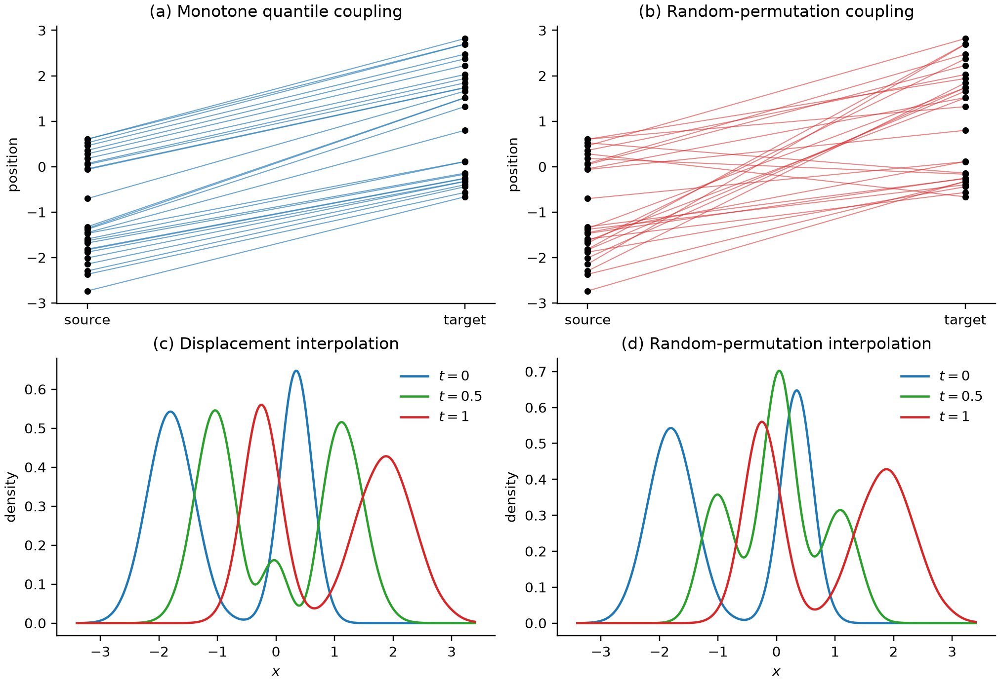
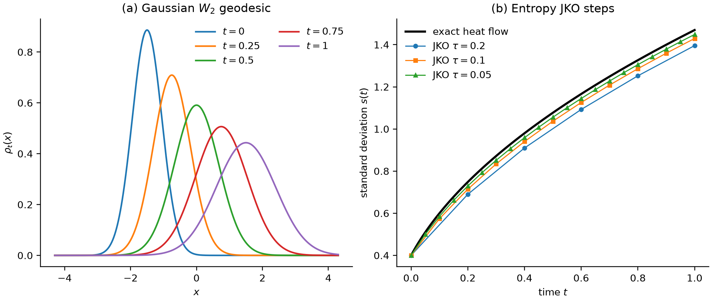
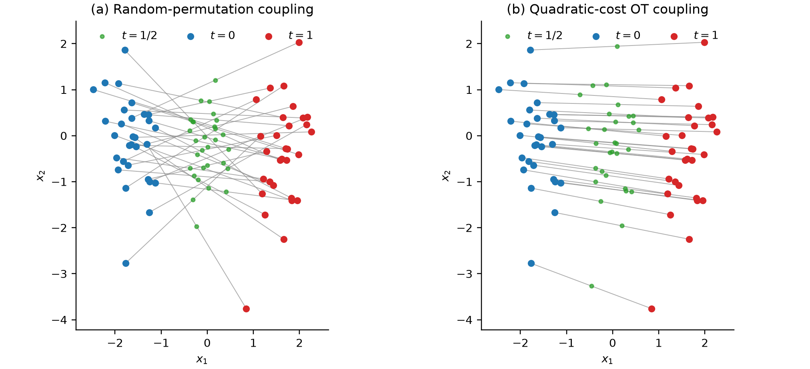

两个分布的差异
两个概率分布之间可以定义很多种“差异”。KL 散度比较密度比，Fisher–Rao 几何比较统计模型的局部可区分性，Wasserstein 距离则询问：如果概率是可搬运的质量，把一个分布变成另一个分布的最小运输代价是多少？
从静态耦合到生成速度场，关系如下：
Wasserstein 距离
记 \(\Pi(\mu,\nu)\) 为边缘分布分别是 \(\mu,\nu\) 的所有联合分布。Kantorovich 问题为
\(\pi(x,y)\) 表示从 \(x\) 送到 \(y\) 的质量。
对 \(p\ge1\)，定义
这里 \(\mathcal P_p(\mathbb R^d)=\{\mu:\int|x|^p\,\mathrm d\mu<\infty\}\)。在该空间上，\(W_p\) 是Wasserstein 距离。
对偶问题
在适当条件下，Kantorovich 对偶为
可以把对偶势看作两端的定价：每一对起终点的报价之和都不能超过直接运费，因而任何可行报价都给总运费一个下界。最优报价与最小运费相等。在二次代价且源分布有密度、两端二阶矩有限时，Brenier 定理给出几乎处处唯一的最优映射
“梯度”与“凸性”不是网络参数化的任意选择，而是二次最优传输的结构结果。
Benamou–Brenier 动力学表述
连续性方程与动能
设 \(\rho_t(x)\) 是从 \(\rho_0\) 连到 \(\rho_1\) 的密度曲线，\(v_t(x)\) 是速度场。概率守恒要求
Benamou–Brenier 公式表明
这里固定起终分布，并要求概率不从边界流失；在 \(\mathbb R^d\) 上取无穷远处足够衰减的分布。式（15）的图像是一团流体在单位时间内完成搬运，寻找累计动能最小的流动方式。
用动量 \(m=\rho v\) 改写，作用量为
用 \((\rho,m)\) 作变量后，约束是线性的，动能是凸的，便于数值求解。无质量处取 \(m=0\) 且动能为零；若 \(\rho=0\) 却有非零流量，代价视为无穷大。
位移插值与测地线
若最优映射 \(T\) 存在，定义
这条曲线称为位移插值。它以常速走过 \(W_2\) 测地线：
对一维高斯分布，测地线上

图 1｜端点相同，配对决定中间路径。 分位数配对保持一维次序，避免无必要的交叉。
Wasserstein 梯度流
泛函梯度与速度场
设 \(\mathcal F[\rho]\) 是密度泛函。对平滑路径和适当边界条件，
式（20）说明，自由能的变化由流速与 \(\nabla(\delta\mathcal F/\delta\rho)\) 的投影决定。对相同的动能预算，沿这个梯度的反方向流动降得最快。取单位迁移率，速度为
代回连续性方程，得到形式上的 Wasserstein 梯度流
沿该流，
右侧正是负的耗散率：自由能降低得越快，所需的流动越强。这个关系沿式（22）的梯度动力学成立。
热方程的梯度流结构
取负熵泛函
式（22）变为
因此热方程既可理解为实空间中的扩散，也可理解为概率分布空间中负熵的最速下降。“最速”的含义依赖 \(W_2\) 度量；换用 Fisher–Rao 度量会得到不同的动力学。
下面把时间尺度选成迁移率为 1，并取 \(k_{\mathrm B}=1\)，因而温度 \(T\) 以能量为单位且 \(U/T\) 无量纲。再取
则
这就是过阻尼 Langevin 方程 \(\mathrm dX_t=-\nabla U(X_t)\,\mathrm dt+\sqrt{2T}\,\mathrm dW_t\) 对应的 Fokker–Planck 方程。若恢复迁移率 \(M\) 和 Boltzmann 常数，漂移与扩散系数分别为 \(-M\nabla U\) 与 \(Mk_{\mathrm B}T\)。
JKO 变分时间离散
与欧氏空间的隐式 Euler 步类似，JKO 格式定义
第一项推动系统降低自由能，第二项限制一个时间步内的搬运距离。小步长下，分布只能在当前位置附近寻找更低的自由能。对这里的自由能，在适当条件下令 \(\tau\to0\)，就恢复对应的 Fokker–Planck 流。
对一维零均值高斯 \(\rho_k=\mathcal N(0,s_k^2)\)，把熵流的一步限制在零均值高斯族内，需最小化
驻值条件给出
而热方程的精确高斯解满足 \(s(t)^2=s_0^2+2t\)。式（30）与它在小 \(\tau\) 下一阶一致。

图 2｜测地线和梯度流是两类曲线。 左图在两个固定端点之间最小化路径长度；右图则由熵泛函驱动分布持续变宽。JKO 是后者的变分时间离散。
熵正则最优传输与 Sinkhorn
对离散边缘 \(a\in\Delta_n\)、\(b\in\Delta_m\) 和代价矩阵 \(C\)，熵正则问题可写为
这里 \(P\in\mathbb R_+^{n\times m}\)，\((a\otimes b)_{ij}=a_i b_j\)。式（31）按 \(a_i,b_j>0\) 且 \(C_{ij}\) 有限的最简情形书写；若边缘含零分量，可先限制在其正支撑上。
定义 \(H(P)=-\sum_{ij}P_{ij}\log P_{ij}\)。不同文献会把只依赖边缘的常数吸收进目标，或把正则项写成 \(-\varepsilon_{\mathrm{OT}}H(P)\)；这些约定在固定边缘下有相同极小点。令
最优计划具有缩放形式
Sinkhorn 迭代交替调整 \(u,v\) 以满足两个边缘约束。较大 \(\varepsilon_{\mathrm{OT}}\) 使计划更平滑、数值问题更容易，但也增强偏差；当 \(\varepsilon_{\mathrm{OT}}\to0\) 时问题趋近无正则 OT，但数值条件变差。
原始熵正则代价通常有自交互偏差，即同一分布与自身的正则代价不必为零。若需要接近距离的比较量，应区分原始正则 OT 与去偏的 Sinkhorn divergence。
Schrödinger Bridge 与随机控制
路径测度问题
给定参考路径测度 \(R\)，Schrödinger Bridge 在所有端点边缘为 \(\mu_0,\mu_1\) 的路径测度 \(P\) 中求解
可以想象许多粒子原本按参考动力学扩散，但观测到的终态分布与自然扩散的结果不同。Schrödinger Bridge 寻找对原动力学改动最小、又能解释两个端点分布的随机过程。
若参考过程为
控制过程为
则在 Girsanov 公式的条件下，路径相对熵的控制部分正比于
若参考过程的初始边缘不是 \(\mu_0\)，完整路径 KL 还包含 \(D_{\mathrm{KL}}(\mu_0\Vert R_0)\)；由于端点边缘已固定，该项对控制优化是常数。
密度满足带扩散的 Fokker–Planck 约束
单位时间内，式（35）的端点转移核满足 \(r(y\mid x)\propto\exp[-|y-x|^2/(2\varepsilon_{\mathrm{SB}})]\)。远距离移动在参考过程中更罕见，对它的偏离也就更昂贵。这使路径问题与带二次代价的熵正则 OT 联系起来。
因此 Schrödinger Bridge 是随机最优控制问题。在适当的有限作用量与紧性条件下，参考噪声趋零时，随机散布逐渐退去，熵插值趋向二次 OT 的位移插值；有限噪声下仍有扩散。
与 diffusion bridge 的区别
一条 Brownian bridge 通常把单条轨道条件化在确定端点 \(X_0=x_0,X_1=x_1\) 上。Schrödinger Bridge 规定的是整体端点分布。它可分解为对端点耦合的选择与对每对端点的参考 bridge 混合，但不应把“一条条件轨道”与“满足边缘约束的最优路径测度”混为一谈。
Flow Matching 与速度场学习
概率路径与 ODE
设生成过程由
驱动。若它在每个时刻的边缘密度为 \(p_t\)，则
假设我们先选定一条可采样的概率路径 \(p_t\)，并知道一个生成它的目标速度场 \(u_t\)。Flow Matching 使用回归目标
这个目标学习速度场，而不是直接学习运输计划、score 或密度归一化常数。
条件速度与平均流动
边缘速度 \(u_t(x)\) 往往不可直接计算。引入潜变量 \(Z\)，例如端点对 \(Z=(X_0,X_1)\)，并构造条件路径 \(p_t(x\mid Z)\) 及条件速度 \(u_t(x\mid Z)\)。边缘密度为
对条件连续性方程关于 \(z\) 积分，先得到边缘流 \(j_t(x)=\int p_t(x\mid z)u_t(x\mid z)q(z)\,\mathrm dz\)。在 \(p_t(x)>0\) 处定义一个边缘速度代表
因此条件回归目标
与边缘 Flow Matching 有相同的总体最优解。原因很直接：同一位置可能经过许多条件轨道，平方误差回归学到的是这些轨道速度的条件平均，即式（43）。在可交换期望与求导的条件下，两种损失只差与参数无关的项，训练梯度也相同。
密度路径仍不能唯一确定速度：叠加满足 \(\nabla\cdot(p_t w_t)=0\) 的环流不改变密度。条件路径选出了其中一个速度场。
线性条件路径与耦合
最简单的条件插值是
式（45）还没有指定谁与谁配对。独立配对、全局 OT 配对和 minibatch OT 配对，会产生不同的条件速度、训练方差和中间密度；minibatch OT 只优化当前批次。图中用无放回随机排列作对照，保留两个经验边缘，但不等于经验乘积计划。
若端点耦合是二次代价的最优计划，且使用直线位移插值，总平均动能实现 \(W_2^2\)。否则，线性 Flow Matching 仍可构成有效生成路径，但不是 Wasserstein 测地线。

图 3｜不同耦合下的线性插值路径。
概率流 ODE
对状态无关的各向同性扩散 \(\mathrm dX_t=f(X_t,t)\,\mathrm dt+g(t)\,\mathrm dW_t\)，密度满足 \(\partial_t p=-\nabla\cdot(fp)+(g^2/2)\Delta p\)。把扩散项写成 \((g^2/2)\Delta p=\nabla\cdot[(g^2/2)p\nabla\log p]\)，可得共享相同边缘密度的 probability-flow ODE
把该速度代回连续性方程就恢复上述 Fokker–Planck 方程。因此它可用 Flow Matching 的语言回归，但给定的扩散边缘路径通常不是两端分布间的 \(W_2\) 测地线。共享端点、共享边缘或共享连续性方程，都不足以推出路径是最优传输。
分布路径的不同选择原则
Benamou–Brenier 可视为确定性分布控制：控制量是 \(v_t\)，状态约束是连续性方程，代价是平均动能。Schrödinger Bridge 则是随机控制：控制修改参考漂移，代价与路径相对熵等价。
Flow Matching 的基本目标式（41）是监督回归，不自带动力学代价的全局极小性。只有在明确指定端点耦合、路径类、控制代价和约束后，才能说某个方法在求解最优控制问题。
| 方法 | 被选择的对象 | 选择原则 |
|---|---|---|
| Kantorovich OT | 端点耦合 \(\pi\) | 最小平均搬运代价 |
| Benamou–Brenier | \((p_t,v_t)\) | 连续性方程下最小动能 |
| Wasserstein 梯度流 | 概率演化方向 | 给定泛函的最陡下降 |
| Schrödinger Bridge | 路径测度 \(P\) | 固定边缘下最小路径 KL |
| Flow Matching | 速度场 \(v_\theta\) | 回归已选路径的条件/边缘速度 |
端点分布留下了很大的路径选择余地：最优传输选择少搬运的路径，梯度流选择降低自由能的方向，Schrödinger Bridge 尽量保留参考随机动力学，Flow Matching 则学习已经选定的流动。路径较短、较直是否有利于网络训练，还取决于速度场复杂度和采样误差。
参考资料
下列原始论文和专著给出公式及其适用范围。
- C. Villani, Optimal Transport: Old and New (2009)：测度论 OT、Wasserstein 空间和测地线的系统参考。Springer
- Y. Brenier, “Polar Factorization and Monotone Rearrangement of Vector-Valued Functions” (1991)：二次代价下凸势梯度运输映射的经典来源。DOI
- J.-D. Benamou and Y. Brenier, “A Computational Fluid Mechanics Solution to the Monge–Kantorovich Mass Transfer Problem” (2000)：\(W_2\) 的动力学表述。DOI
- R. Jordan, D. Kinderlehrer, and F. Otto, “The Variational Formulation of the Fokker–Planck Equation” (1998)：JKO 格式与自由能梯度流。SIAM
- M. Cuturi, “Sinkhorn Distances: Lightspeed Computation of Optimal Transport” (2013)：熵正则 OT 与 Sinkhorn 缩放。NeurIPS
- C. Léonard, “A Survey of the Schrödinger Problem and Some of Its Connections with Optimal Transport” (2014)：路径相对熵、熵插值与小噪声极限。arXiv
- Y. Lipman et al., “Flow Matching for Generative Modeling” (ICLR 2023)：Flow Matching 和 Conditional Flow Matching 的基础表述。OpenReview
- A. Tong et al., “Improving and Generalizing Flow-Based Generative Models with Minibatch Optimal Transport” (TMLR 2024)：条件流匹配和 minibatch OT 耦合。OpenReview
- A. Tong et al., “Simulation-Free Schrödinger Bridges via Score and Flow Matching” (AISTATS 2024)：Schrödinger Bridge 与 score/flow matching 的现代接口。PMLR